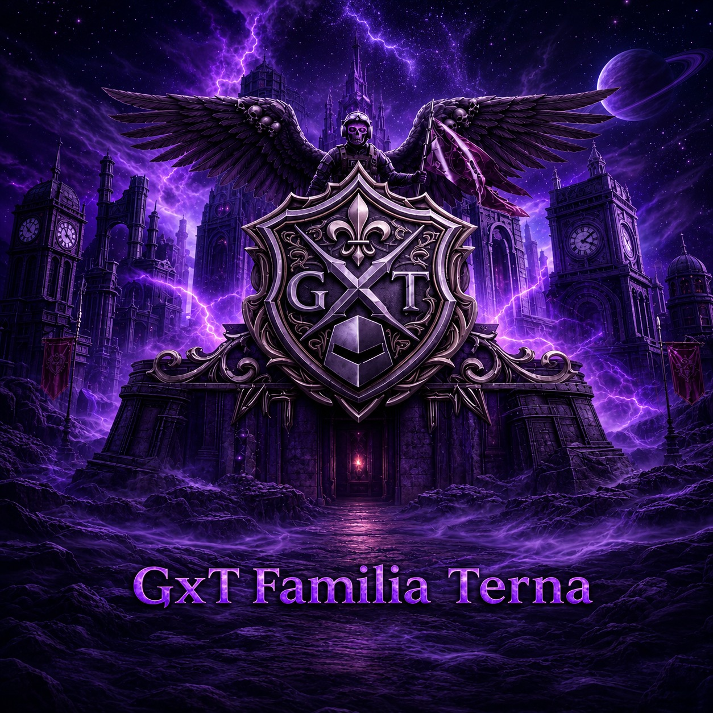

Saltar al contenido

ᴳ乂ᵀ
⚜️
Familia Terna
☰
Inicio
Directorio
Guerra
Torneos
Comunidad
Mensajes
Acceder
← Volver al Directorio
Dashboard de clan
Guerra
Resumen de guerra de esta semana
Evolución
Copas del clan
Roster
Ver en el Directorio →